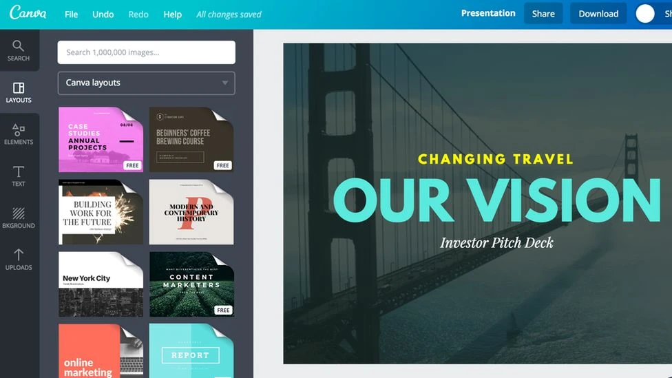

Canva Menu - Design Tools
Got a design idea? Canva provides a diverse set of tools like - Text effects, shadows, frames, elements in menu and lots of graphics to implement your ideas on the canvas. In this article, you’ll get acquainted with the basic working of Canva Menu.
Let's see what does Canva menu consists of :
Templates

Templates are of great help when you are unsure about what kind of design you want to make and which elements would be a good fit for it. It comprises of predesigned posts which can give an idea of how to get started with your design; the elements, text, position of the images etc.
You can search for a particular template by typing the keywords in the search bar. Select the template you like and then you can begin by modifying its elements the way you want.
Elements
Canva offers an extensive range of elements which you're gonna find yourself using a lot.

- Lines and Shapes
Covers almost all the shapes and polygons both outlined and filled.

- Graphics
Magic recommendations - Canva recommends elements which you may like based on the elements you use. These are static as well as animated.
Gradients
Avatars
Stickers

- Frames
Extremely useful when you want to give a definite shape to a picture. To do that, just have to drop a frame on canvas and add an image by dragging it over the frame.
You can also find numerical and alphabet frames .
- Tables
- Without any color fill, just borders
- Top Heading row is filled with solid color, rest is bordered only.
- Whole table is filled, with different color for Heading row than rest of the table.
- Charts
- Progress Bars
- Progress Rings
- Radial Rings
- Donut Chart
- Pie Chart
- Bar Chart
- Line Chart
- Scatter-plot Chart
- Pictograms
- Area Chart
- Histogram Chart
- Progress Dial
- Grids
By default Canva has 3 Design Formats for Tables -
Table borders, text spacing, cell spacing, color fill of any cell or entire table can be modified if required.
Display all the statistical information graphically. Charts in Canva can be easily customized with a few clicks. They can make your project visually appealing especially if you’re working on a presentation with plenty of data.
Grids are usually used for embedding a collection of pictures in your design. Rather than aligning all pics yourself with equal spacing, choose a desired layout and just drop the images in the frames. Grid divides canvas into frames which you can fill with color, photos or any other element.
Uploads

All your uploaded media is present here. You can add images, videos and audios by clicking on Upload Media button or just drag and drop the files on the Canva screen.
Files can be added through :
- Upload (files on your Laptop)
- Google Drive
- Dropbox
- Google Photos
Canva also gives an option of recording yourself as well as the screen you are working on. It is helpful if you are doing a recorded presentation.
Photos

Contains a vast collection of photos which you can choose for your design.
Search for the image you want to use. In addition, you can filter the search results by specifing the :
- Background - Choose the background color of the image.
- Orientation - You can set orientation as horizontal or vertical.
- Cut-outs - This filter will show only image cutouts, without background.
Text

Canva provides sets of combination of fonts for headings and sub headings. If you want to use a specific font from the combination, just add it on the canvas and delete the fonts which aren’t required.
Text fonts are crucial in conveying the feel of the design. It’s important to use them accordingly.
Styles

Styles tab consists of the themes you can apply to your design. This comprises of the following :
1. The color theme your design will be based on. To shuffle the colors i.e switching colors between different kind of elements like text, triangle and background, click on the selected color theme repeatedly to get the desired combination.
2. The font for Heading and Sub heading.
Color themes can be chosen separately. You will find both of them combined in one theme, under the All category
Note - For creating your own font style combinations and color palettes, you need to upgrade to PRO version.
Audio

Audios can be inserted from different categories - Pop, Ambient, Happy, depending on the content. With that, you can choose the part of the audio to be played. These are usually used when you want to give background music to a video.
Filters for audio :
- Vocals
- Instrumentals
- Effects
Background
Use the background which suits the best. You can search the backgrounds like - pastel, abstract or geometric from the search bar.
Emojis

Choose from hundreds of emojis to give your design a modern and quirky styling.
Draw Beta

Draw beta contains freehand drawing tools like marker, pen, highlighter and glow pen which can give a candid look to your post.
You can change the color, transparency and size of the brush as per requirement.
More

Want to experiment more with designing? You can explore more tools like -
- Videos
- Character Building
- Bitmoji
- QR Code generator
- More options for importing media
- Adding Google Maps - Simply enter the required Location in search bar.
- Giphy - Insert gifs in your design.
- Youtube - Add videos directly from Youtube.
Conclusion
Now that you are well versed with almost all the tools in the Menu, you can go ahead and create stunning designs for your project!